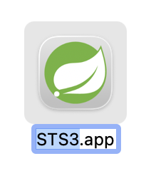
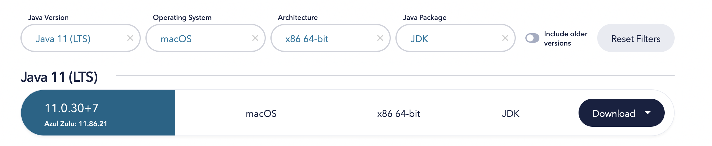
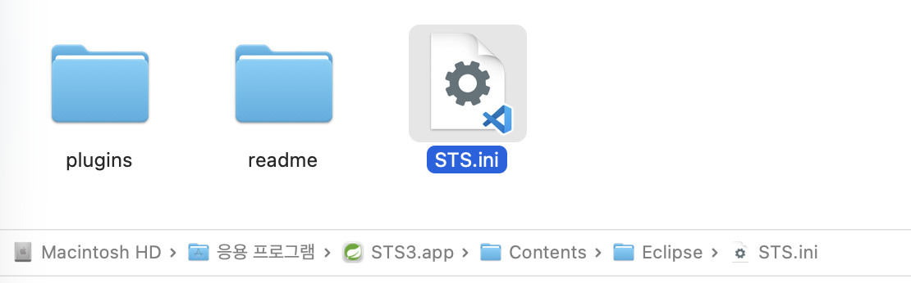
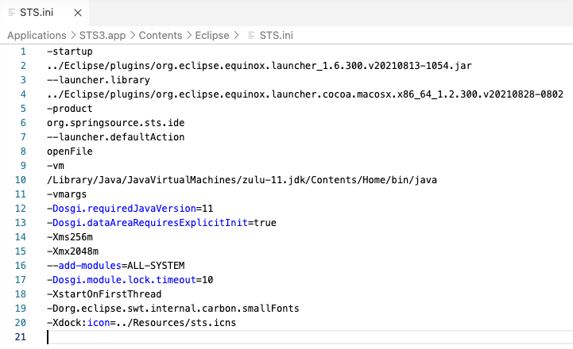

OS 설정
실리콘 맥에서 STS3 설치하기: Spring Tool Suite 3 + x86 Java 11 설정
Apple Silicon Mac에서 레거시 프로젝트 때문에 STS3를 써야 할 때 필요한
다운로드, x86 Java 11 설치, STS.ini 수정, 터미널 alias 설정까지
실제 흐름대로 정리했다.
개요
STS3는 최신 Apple Silicon 네이티브 앱이 아니라 Intel 기준으로 배포된 레거시 도구라서, 실리콘 맥에서는 그냥 실행만 하면 끝나지 않는 경우가 많다. 핵심은 세 가지다. Intel용 STS3를 내려받고, x86 Java 11 JDK를 설치한 뒤, STS가 그 Java를 정확히 바라보게 설정해야 한다.
레거시 Spring 프로젝트나 기존 워크스페이스 때문에 STS3를 계속 써야 한다면, 이런 설정 없이 Apple Silicon Mac에서 바로 실행하는 것은 생각보다 잘 되지 않는다.
STS3 macOS 배포 파일은 x86_64 기준이므로, Apple Silicon Mac에서는 Rosetta 2가 필요할 수 있다. STS3를 처음 열 때 Rosetta 설치 안내가 나오면 그대로 진행하면 된다.
설치 팝업이 뜨지 않으면 터미널에서
softwareupdate --install-rosetta --agree-to-license로 직접 설치할 수 있다.
참고로 이 글에서 앱 이름을 STS3.app으로 적은 이유는, 최신 STS와
Finder에서 헷갈리지 않게 직접 이름을 바꿔서 쓰는 흐름을 기준으로 정리했기 때문이다.
이름을 바꾸지 않았다면 아래 경로에서 앱 이름 부분만 원래 이름에 맞춰 바꾸면 된다.
1. STS3 다운로드 및 설치
먼저 Spring Tool Suite 3 안내 페이지에서 macOS용 STS3 배포본을 확인한 뒤, 아래 DMG를 직접 내려받아 설치한다.
- STS3 안내: https://github.com/spring-attic/toolsuite-distribution/wiki/Spring-Tool-Suite-3
- 다운로드: spring-tool-suite-3.9.18.RELEASE-e4.21.0-macosx-cocoa-x86_64.dmg
DMG를 실행해 애플리케이션으로 복사한 뒤, 나는 최신 STS와 구분하려고 앱 이름을
STS3.app으로 바꿔 두었다.

STS3.app으로 바꿔 두면 구분이 쉽다.
2. Azul x86 Java 11 LTS 설치
STS3가 사용할 JDK는 x86 Java 11로 맞추는 편이 가장 덜 꼬였다. Azul 다운로드 페이지에서 아래 조건으로 선택해 설치하면 된다.
- Java version: Java 11 (LTS)
- Operating System: macOS
- Architecture: x86 64-bit
- Package: JDK
다운로드 페이지: Azul Zulu Java 11 LTS for macOS x86_64

Java 11 (LTS), macOS,
x86 64-bit, JDK 조합으로 선택한다.
설치가 끝나면 보통 아래 경로에 JDK가 잡힌다.
/Library/Java/JavaVirtualMachines/zulu-11.jdk/Contents/HomeApple Silicon용 arm64 JDK가 이미 설치되어 있어도, STS3용 경로는 글에서 사용하는 x86 Java 11 경로로 명시해 두는 편이 안전하다.
3. STS.app 내부의 STS.ini 수정
애플리케이션 폴더에서 STS3.app을 우클릭한 뒤
패키지 내용 보기로 들어간다. 그다음 아래 파일을 연다.
/Applications/STS3.app/Contents/Eclipse/STS.ini
STS3.app -> Contents -> Eclipse -> STS.ini 경로로 들어간다.
파일 안에서 -vmargs 바로 위에 --vm과 Java 실행 파일
경로를 추가하고 저장한다.
--vm
/Library/Java/JavaVirtualMachines/zulu-11.jdk/Contents/Home/bin/java
-vmargs
-vmargs 위에 --vm과
/Library/Java/JavaVirtualMachines/zulu-11.jdk/Contents/Home/bin/java를 넣는다.
핵심은 Home 디렉터리가 아니라 bin/java까지 정확히 적는 것이다.
이렇게 해두면 STS3가 어떤 Java로 뜨는지 명확해져서 실행 실패를 줄일 수 있다.
4. 터미널에서 sts3 명령으로 열기
Finder에서 매번 클릭하기 번거롭다면 ~/.zshrc에 alias를 추가해두면 편하다.
앱 이름을 STS3.app이 아니라 원래 이름으로 두었다면, 아래 alias 경로도
실제 앱 이름에 맞춰 같이 바꿔야 한다.
open -e ~/.zshrc아래 한 줄을 추가하고 저장한다.
alias sts3='/Applications/STS3.app/Contents/MacOS/STS >/dev/null 2>&1 &'변경 사항 반영:
source ~/.zshrc이제 터미널에서 아래처럼 바로 실행할 수 있다.
sts3검증
x86 Java 11과 STS3 설정이 끝났다면 아래 순서로 확인하면 된다.
/usr/libexec/java_home -V로zulu-11.jdk가 설치되어 있는지 본다./Applications/STS3.app/Contents/Eclipse/STS.ini에--vm설정이 들어갔는지 확인한다.source ~/.zshrc후sts3명령으로 앱이 열리는지 확인한다.- 처음 실행 시 Rosetta 설치 창이 뜨면 설치를 완료한 뒤 다시 연다.
실리콘 맥에서 STS3를 띄우는 핵심은 “STS3 Intel 앱 + x86 Java 11 + STS.ini에 명시적 VM 경로 지정” 조합이다. 여기까지 맞춰두면 레거시 Spring 프로젝트를 당장 열어야 할 때 가장 빠르게 복구할 수 있다.